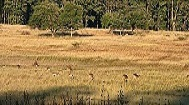
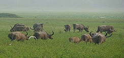
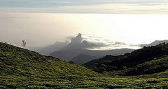

The Terai Arc Landscape (across the states of Uttarakhand, Uttar Pradesh and Bihar) covering the Rajaji National Park, Corbett, Dudhwa and Valmiki Tiger Reserves, proposed Pilibhit Tiger Reserve and adjoining forests;
The Terai Arc Landscape (across the states of Uttarakhand, Uttar Pradesh and Bihar) covering the Rajaji National Park, Corbett, Dudhwa and Valmiki Tiger Reserves, proposed Pilibhit Tiger Reserve and adjoining forests;Terai Arc Landscape (TAL) is composed of 14 Indian and Nepalese tans-border protected ecosystems of the Terai (Sanskrit for "lowlands") and nearby foothills of the Himalayas and encompassing 14 protected areas of Nepal and India. The area spans approximately 12.3 million acres (5 million hectares) and includes Nepal's Bagmati River to the east and India's Yamuna River to the west.The TAL is home to many endangered mammals including the Bengal tiger (of which it has one of the world's highest densities), the Indian rhinoceros, the gaur, the wild Asian elephant, the hispid hare, the sloth bear, the South Asian river dolphin and the chital, as well as over 500 species of birds, many endangered. Examples of birds are the endangered Bengal florican, the sarus crane, and the black stork.
The Sundarbans landscape (or Sundarbans, or Ganges-Brahmaputra Delta) is the world's largest delta (~105,000 km2) and home to 123 million people. The delta lies in India (19%) and Bangladesh (81%) with rivers draining Bhutan, China, India and Nepal.The Sundarbans mangrove forest, one of the largest such forests in the world (140,000 ha), lies on the delta of the Ganges, Brahmaputra and Meghna rivers on the Bay of Bengal. It is adjacent to the border of India Sundarbans World Heritage site inscribed in 1987. The site is intersected by a complex network of tidal waterways, mudflats and small islands of salt-tolerant mangrove forests, and presents an excellent example of ongoing ecological processes. The area is known for its wide range of fauna, including 260 bird species, the Bengal tiger and other threatened species such as the estuarine crocodile and the Indian python.
This landscape is amongst WWF global priority regions for conservation, especially for tigers. It is also recognized as a region with one of the best potentials for long-term tiger conservation by the National Tiger Conservation Authority, Government of India. Other than the tiger (Panthera tigris), the faunal diversity includes some of the most charismatic and endangered species such as the leopard (Panthera pardus), sloth bear (Melursus ursinus), gaur (Bos gaurus), hard ground swamp deer (Cervus duvacelli) as well as more than 300 species of birds.
In this part of the country, the North Bank Landscape (NBL) defines the area between northern bank of the river Brahmaputra in the south and the foothills of the eastern Himalayas in the north and the River Sankosh in the west, to the River Dibang in the east. The total size of the landscape is approximately 40,000km2 and includes parts of Assam and Arunachal Pradesh. About a quarter of the landscape (10,719km2) bears the status of an elephant reserve or a tiger reserve.
Kaziranga National Park, the biggest protected area (PA) in this landscape is connected with the rest of the landscape through four corridors, namely Panbari, Haldhibari, Amguri and Kanchanjhuri, which are facing anthropogenic pressures. This landscape has a population of about 2500 elephants about half of Assam elephant population and more than 70 per cent of Assam tigers. In addition, this landscape boasts of more than 2,000 rhinos, comprising close to 90 per cent of the rhino population of India. This makes the area critical for protection and conservation of wildlife and their habitats.
Their positioning makes the Western Ghats biologically rich and biogeographically unique - a veritable treasure house of biodiversity. Though covering an area of 180,000km2, or just under 6 per cent of the land area of India, the Western Ghats contain more than 30 per cent of all plant, fish, herpeto-fauna, bird, and mammal species found in India. Many species are endemic, such as the Nilgiri tahr (Hemitragus hylocrius) and the lion-tailed macaque (Macaca silenus). In fact, 50 per cent of India’s amphibians and 67 per cent of fish species are endemic to this region.